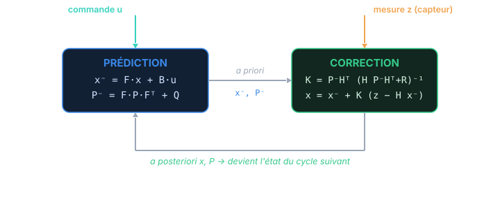

Chapitre 04
Le filtrage bayésien récursif
Objectifs du chapitre
- Formaliser la croyance : la loi de l'état sachant toutes les mesures passées, p(xₖ | z₁:ₖ).
- Poser les deux hypothèses structurelles — Markov sur l'état, mesures conditionnellement indépendantes — qui rendent le filtrage récursif.
- Dériver le cycle universel : prédiction (équation de Chapman-Kolmogorov) puis correction (règle de Bayes).
- Comprendre que le filtre de Kalman n'est qu'un cas particulier de ce cycle, obtenu quand tout est linéaire-gaussien.
1. La croyance : tout ce qu'on sait, en une loi
Reprenons le fil du chapitre 1 : on suit une distribution, pas une valeur. À l'instant k, après avoir encaissé les mesures z₁, z₂, …, zₖ (noté z₁:ₖ), tout ce que le filtre « sait » de l'état tient dans une seule loi de probabilité, la croyance (ou belief) :
C'est la loi de l'état courant conditionnée à tout l'historique des mesures. Le but du filtrage est de maintenir cette loi à jour, mesure après mesure, sans jamais rejouer tout l'historique. On veut passer de bel(xₖ₋₁) à bel(xₖ) en n'utilisant que la croyance précédente et la nouvelle mesure zₖ. C'est ça, être récursif — et c'est ce qui rend le calcul faisable à coût constant, indéfiniment.
La croyance est une mémoire compressée du passé. Au lieu de garder toutes les mesures depuis le début (mémoire et calcul croissant sans fin), on résume tout leur contenu informatif dans une seule loi. À chaque nouvelle mesure, on met à jour ce résumé et on jette la mesure. Le filtre ne vieillit jamais.
2. Les deux hypothèses qui rendent la récursion possible
Cette compression ne va pas de soi. Elle repose sur deux hypothèses de structure sur le système — valables bien au-delà du cas gaussien.
2.1 L'état est markovien
Le futur ne dépend du passé qu'à travers le présent. Formellement, sachant l'état xₖ₋₁, l'état xₖ ne dépend plus de ce qui s'est passé avant :
C'est la définition même d'un état : un résumé suffisant du passé. On appelle p(xₖ | xₖ₋₁) le modèle de transition (ou de mouvement). Si votre « état » ne vérifie pas Markov, c'est qu'il est incomplet — il manque une variable (souvent une dérivée, comme la vitesse) qu'il faudrait y ajouter.
2.2 Les mesures sont conditionnellement indépendantes
Sachant l'état courant xₖ, la mesure zₖ ne dépend de rien d'autre : ni des états passés, ni des mesures passées.
On appelle p(zₖ | xₖ) le modèle de mesure (ou de vraisemblance) : la probabilité d'observer zₖ si l'état vaut xₖ. Le bruit du capteur est supposé frais à chaque instant, sans mémoire d'un pas à l'autre.
Deux briques suffisent à décrire tout le système : le modèle de transition p(xₖ|xₖ₋₁) (comment l'état évolue) et le modèle de mesure p(zₖ|xₖ) (comment l'état se manifeste au capteur). Le filtre de Kalman n'est que ces deux briques rendues linéaires-gaussiennes (chapitre 5).
3. Le cycle en deux temps
Passer de bel(xₖ₋₁) à bel(xₖ) se fait en deux mouvements complémentaires : d'abord avancer dans le temps (prédiction), puis intégrer la nouvelle mesure (correction).

3.1 Prédiction — l'équation de Chapman-Kolmogorov
Avant de voir zₖ, on fait vieillir la croyance d'un pas à travers le modèle de transition. On veut p(xₖ | z₁:ₖ₋₁), la croyance prédite (l'a priori). On l'obtient en sommant sur toutes les provenances possibles xₖ₋₁, pondérées par leur croyance :
Cette intégrale est l'équation de Chapman-Kolmogorov. En mots : « la probabilité d'arriver en xₖ est la somme, sur tous les points de départ possibles, de la probabilité d'y avoir été fois celle d'en venir ». C'est une convolution de la croyance par la dynamique. Elle étale la croyance : on additionne des incertitudes, donc on en sait moins qu'avant.
3.2 Correction — la règle de Bayes
La mesure zₖ arrive. On met à jour l'a priori par la règle de Bayes :
Lisons chaque terme :
- p(xₖ | z₁:ₖ₋₁) — l'a priori, ce qu'on croyait avant la mesure (sortie de la prédiction) ;
- p(zₖ | xₖ) — la vraisemblance, à quel point chaque valeur d'état explique la mesure observée ;
- le dénominateur — une simple constante de normalisation (l'évidence), qui ne dépend pas de xₖ et garantit une aire de 1 ;
- p(xₖ | z₁:ₖ) — l'a posteriori, la nouvelle croyance, prête à servir de point de départ au cycle suivant.
La correction resserre la croyance : multiplier l'a priori par la vraisemblance ne peut que concentrer la masse là où les deux s'accordent. C'est le pendant exact de la respiration décrite au chapitre 1 : la prédiction gonfle, la correction resserre.
« A posteriori ∝ vraisemblance × a priori. » Cette proportionnalité résume toute l'inférence bayésienne. La constante de normalisation, souvent pénible à calculer dans le cas général, va disparaître dans le cas gaussien : on saura que le résultat est gaussien, il suffira d'en identifier moyenne et covariance. C'est là que le filtre de Kalman gagne sa vitesse.
4. Pourquoi le cas général est intraitable — et Kalman non
Ce cycle prédiction/correction est exact et universel : il vaut pour n'importe quels modèles de transition et de mesure. Mais dans le cas général, il est incalculable en pratique. L'intégrale de Chapman-Kolmogorov n'a pas de forme fermée, et l'a posteriori peut prendre une forme arbitrairement compliquée (multi-bosses, asymétrique) qu'aucun petit jeu de paramètres ne résume. On se rabat alors sur des approximations : grille de points, particules (filtre particulaire), ou linéarisation.
Le miracle du cas linéaire-gaussien, c'est que les deux étapes restent dans la famille gaussienne (grâce aux clôtures du chapitre 3) :
- La prédiction est une transformation linéaire d'une gaussienne + un bruit gaussien → gaussienne (clôture linéaire + additivité).
- La correction est un produit gaussien × gaussien, renormalisé → gaussienne (clôture par conditionnement).
Donc la croyance reste gaussienne à tout instant, entièrement décrite par (xₖ, Pₖ). Les intégrales et la normalisation se réduisent à de l'algèbre matricielle sur ces deux objets. Le filtre de Kalman est le filtre bayésien récursif, spécialisé au cas où l'on peut tout faire à la main. Il ne reste qu'à écrire ce modèle linéaire-gaussien : c'est le chapitre suivant.
Ne confondez pas la structure (prédiction/correction, valable partout) et sa réalisation (les cinq équations matricielles, valables seulement en linéaire-gaussien). L'EKF, l'UKF, le filtre particulaire gardent tous la même structure de la figure 4.1 ; ils ne diffèrent que par la façon d'approcher les deux étapes quand les hypothèses de Kalman tombent (chapitre 10).
Récapitulatif
- Le filtre maintient une croyance bel(xₖ) = p(xₖ | z₁:ₖ) : tout le savoir sur l'état, résumé en une loi.
- Deux hypothèses la rendent récursive : état markovien (p(xₖ|xₖ₋₁)) et mesures conditionnellement indépendantes (p(zₖ|xₖ)).
- Prédiction (Chapman-Kolmogorov) : p(xₖ|z₁:ₖ₋₁) = ∫ p(xₖ|xₖ₋₁) p(xₖ₋₁|z₁:ₖ₋₁) dxₖ₋₁ — étale la croyance.
- Correction (Bayes) : a posteriori ∝ vraisemblance × a priori — resserre la croyance.
- Ce cycle est exact et universel mais généralement incalculable ; le cas linéaire-gaussien le rend calculable car la croyance reste gaussienne, décrite par (x, P).
- Le filtre de Kalman = ce cycle spécialisé. EKF/UKF/particulaire = ce même cycle, approché autrement.